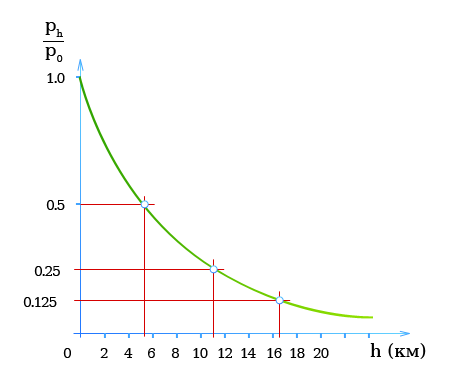

АэростатикаМолекулы газов практически не взаимодействуют друг с другом. Поэтому газы не имеют определенной формы и объема и целиком заполняют сосуд, в котором находятся. В газе существует определенное давление, действующее равномерно во все стороны. Закон Бойля — Мариотта (Давление и объем газа)Давление газа при постоянной температуре пропорционально числу молекул газа, находящихся в данном объеме, т.е. массе газа. Состояние газов описывается законом Бойля — Мариотта: При постоянной температуре объем находящегося в замкнутом сосуде газа обратно пропорционален давлению. или При постоянной температуре произведение давления газа, находящегося в замкнутом сосуде, на его объем есть постоянная величина. или При постоянной температуре давление и плотность находящегося в замкнутом сосуде газа пропорциональны друг другу.
При расчетах следует всегда пользоваться полным давлением (абсолютным давлением) Избыточное давлениеИзбыточное давление-это разность между внутренним (собственным) давлением газа и атмосферным давлением.
Атмосферное давлениеВблизи земной поверхности: При подъеме на каждые 8 м атмосферное давление падает на 100 Па = 1 мбар. Собственный вес столба воздуха создает атмосферное давление, которое уменьшается по мере удаления от поверхности Земли.Если предположить, что температура воздуха с высотой не меняется, то атмосферное давление уменьшается с высотой по экспоненциальному закону.
Для высот примерно до 100 км давление (при постоянной температуре) рассчитывается по формуле
 Если давление у поверхности Земли p0 = pн = 101.325 кПа (до 1980 г. — 760 мм рт. ст.) и температура воздуха на любой высоте равна 0°С, то из формулы следует:
При pн = 101.325 кПа (среднегодовое значение атмосферного давления на уровне моря) и t = 15°С (среднегодовое значение температуры на уровне моря) для высот до 11 000 м (тропосфера) следует пользоваться международной формулой:
Примечание:Атмосферное давление зависит от места измерения, температуры воздуха и погоды. На уровне моря среднегодовое атмосферное давление составляет pн = 1013.25 мбар = 101,325 кПа (нормальное давление) при среднегодовой температуре 15°С. |